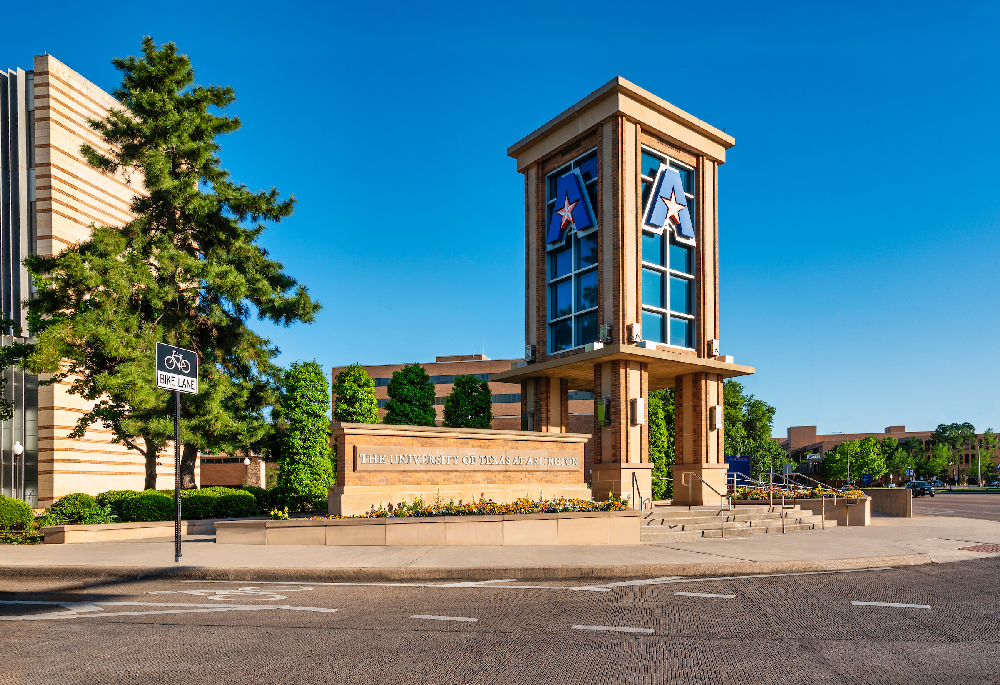
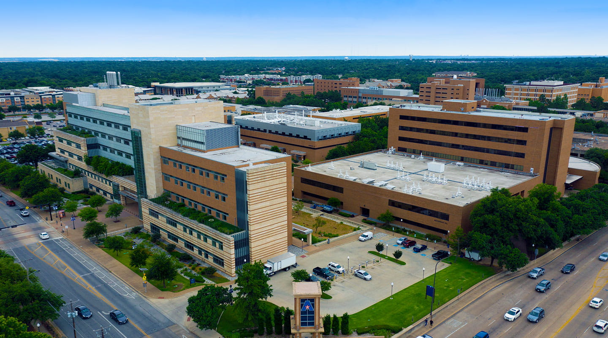
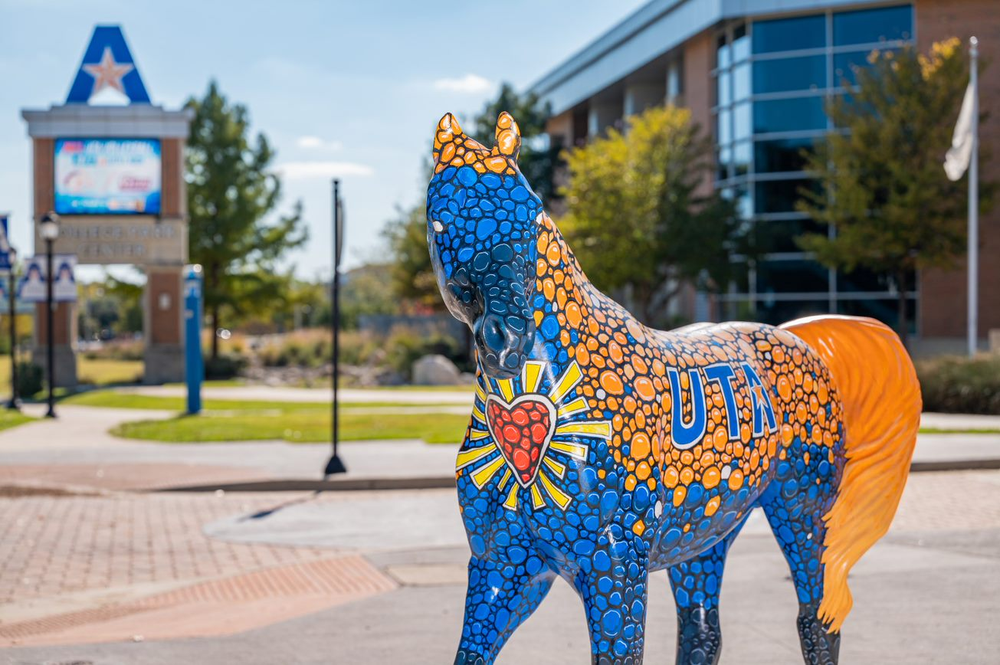

MSEE Coursework
I received my Masters of Science in Electrical & Electronics degree from the University of Texas at Arlington.
UTA is known for its state of the art research facilities &
academic, internship, and research programs that provides students real-world
experience & help them contribute to their community and, ultimately, the world. Here
are some fast facts about UTA.

1/4
Founded in 1895, The University of Texas at Arlington
is a Carnegie Research 1 institution with more than 100 years of academic excellence
and tradition.

2/4
UTA has a 420 acre campus and
offers state-of-the-art facilities that encourage students to be critical thinkers.
Students come from every state and more than 100 countries, resulting in one of the
most diverse campus populations in the US.

3/4
Intelligent.com ranked UTA’s master’s degree programs No. 7 in the U.S. for 2021.
n 2021, Newsweek and the publisher of Make magazine included UTA on its non-ranked
list of the “Best Maker Schools in Higher Education.”
4/4
Kalpana Chawla an Indian-born American astronaut
and aerospace engineer who was the first woman of Indian origin to go to space is an
alumni of UTA.
Under the guidance of some renowned professors at UTA, I have worked on 13 valuable Embedded development projects
that gave me the necessary exposure to industry level Firmware development projects.
I graduated in 2015 with a GPA 3.82. I have enlised some of the coursework below.
- Embedded Mircocontroller Systems
- Computer Architecture II
- Microprocessor Systems
- Real Time Data Acquisition Systems
- Advanced Embedded Systems
- Advanced Electrical Engineering
- Digital Image Processing
- Digital Signal Processing
- Introduction to Systems Engineering